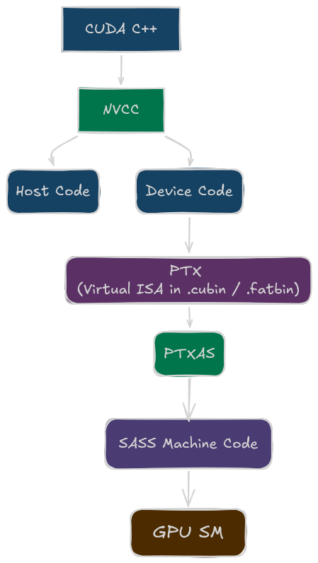

CUDA PTX: Learning to Read NVIDIA's Virtual ISA
Table of Contents
TL;DR
- PTX is not the real hardware ISA. It is NVIDIA’s virtual instruction set that sits between CUDA C++ and SASS.
- PTX is the best layer for learning how the compiler thinks about types, addresses, predicates, and memory spaces.
- SASS is where architecture-specific details appear: actual opcodes, scheduling metadata, scoreboard behavior, and pipeline usage.
- If you can read PTX, you can usually answer: what computation is happening, what memory space it touches, and why the compiler generated a certain structure.
- If you want to optimize the last 20%, you eventually need to correlate PTX with SASS and profiler data.
CPU Baseline: Why GPUs Need a Virtual ISA Layer
On CPUs, most people think in terms of:
C/C++ -> x86-64 or ARM64 assembly -> hardware
On NVIDIA GPUs, there is an extra layer:
CUDA C++ -> PTX -> SASS -> hardware
That extra layer exists for a practical reason: portability.
PTX is stable across GPU generations. SASS is not.
PTX lets NVIDIA keep a stable compiler target while still generating different hardware instructions for Volta, Ampere, Hopper, Blackwell, or whatever comes next.
That is why PTX feels a bit like LLVM IR for CUDA developers: not exactly source, not exactly machine code, but the most useful middle ground.
What is PTX?
PTX stands for Parallel Thread Execution. It is a virtual instruction set architecture (ISA) designed by NVIDIA to serve as an intermediate representation for CUDA programs.
When you write a CUDA kernel in C++, the NVIDIA compiler (nvcc) compiles it down to PTX code. This PTX code is then further compiled by ptxas into SASS (the actual assembly language for NVIDIA GPUs) that runs on the hardware. Think of PTX as the point where CUDA stops being “high-level C++ with kernels” and starts becoming a GPU program description.

Why Start with PTX?
Coming from CUDA kernel development, PTX is still close enough to the source code to be readable, while already exposing the machine-oriented ideas that matter on GPUs:
- explicit data types
- explicit state spaces
- predicated execution
- address calculations
- and the compiler’s lowered control flow
What PTX Is — and What It Is Not
PTX is
- a virtual ISA,
- strongly typed,
- explicit about memory spaces,
- readable enough for humans,
- and designed to be lowered into hardware-specific SASS.
PTX is not
- the exact instruction stream that runs on the SM,
- a guarantee of final opcode selection,
- a guarantee of final register count,
- or a guarantee of final scheduling behavior.
That distinction matters.
If you see this in PTX:
mul.lo.s32 %r4, %r2, %r3;
you know the compiler wants an integer multiply with the low 32 bits of the result.
You do not yet know:
- the exact SASS opcode,
- whether it shares a pipe with FP32 on the target GPU,
- how many physical registers survive allocation,
- or what latency-hiding behavior the final kernel exhibits.
PTX tells you the intent. SASS tells you the implementation.
Anatomy of a PTX Instruction
The general pattern is:
opcode[.modifier].type destination, source1, source2, ...;
Example:
add.s32 %r0, %r1, %r2;
Break it down:
add-> operation.s32-> signed 32-bit integer type%r0-> destination%r1,%r2-> input operands
Another example:
fma.rn.f32 %f4, %f1, %f2, %f3;
fma-> fused multiply-add.rn-> round-to-nearest.f32-> 32-bit floating point
PTX is explicit by design. Unlike C++, there are no silent promotions hiding inside the instruction text.
PTX Register Declaration and Naming
PTX uses virtual registers. They are not the final physical registers of the GPU.
You will commonly see names like these:
| PTX name style | Typical meaning |
|---|---|
%r |
32-bit integer register |
%rd |
64-bit integer register |
%f |
32-bit float register |
%fd |
64-bit float register |
%p |
predicate register |
Example declarations in handwritten PTX look like this:
.reg .b32 %r<6>; // declare 6 virtual 32-bit integer/bit registers: %r0..%r5
.reg .b64 %rd<6>; // declare 6 virtual 64-bit integer/address registers: %rd0..%rd5
.reg .f32 %f<5>; // declare 5 virtual 32-bit floating-point registers: %f0..%f4
.reg .pred %p<2>; // declare 2 predicate (boolean mask) registers: %p0..%p1
Two important points:
- These are virtual registers in PTX.
- Final physical allocation happens later in
ptxas.
That means a PTX file can look like it uses many registers, yet the final SASS allocation may differ substantially after optimization, dead code removal, copy coalescing, and spilling decisions.
CPU contrast
On x86-64, the assembly names you see are architectural register names such as rax, rbx, xmm0, ymm1.
On PTX, the names are closer to compiler temporaries.
This is one of the biggest mindset shifts when moving from CPU assembly to GPU IR.
The Most Important PTX Data Types
PTX is typed at the instruction level.
| Suffix | Meaning |
|---|---|
.s32 |
signed 32-bit integer |
.u32 |
unsigned 32-bit integer |
.s64 |
signed 64-bit integer |
.u64 |
unsigned 64-bit integer |
.f32 |
32-bit float |
.f64 |
64-bit float |
.pred |
predicate value |
.b16/.b32/.b64 |
raw bit containers |
Examples:
add.s32 %r0, %r1, %r2;
add.f32 %f0, %f1, %f2;
mul.wide.u32 %rd0, %r1, %r2;
No implicit mixed-type arithmetic
There is no add.s32.u32 in PTX. One instruction has one operand type family, so when types do not match, the compiler must make the change explicit using the following:
- Conversion (
cvt) — change representation/type of a value. - Widening Arithmetic (
.wide) — keep arithmetic exact by writing into a wider destination.
Conversion with cvt
Use cvt when the value itself must change type (integer ↔ float, 32-bit ↔ 64-bit, signed ↔ unsigned interpretation with extension).
The general form is:
cvt.type_dst.type_src dest, src
Examples:
cvt.s64.s32 %rd0, %r0 // sign-extend int32 → int64 (MOVSX equivalent)
cvt.u64.u32 %rd0, %r0 // zero-extend uint32 → uint64 (MOVZX equivalent)
cvt.f32.u32 %f0, %r0 // uint32 → float (CVTSI2SS equivalent)
cvt.f64.f32 %fd0, %f0 // float → double (CVTSS2SD equivalent)
For floating-point conversions, PTX usually makes rounding mode explicit.
cvt.rn.f32.s32 %f0, %r0 // int32 → float, round-to-nearest
For integer-to-integer extension, no floating-point rounding qualifier is needed.
Widening Arithmetic with .wide
Use mul.wide when you want a full-width product from narrower operands (common in address/offset math).
mul.wide.s32 %rd0, %r0, %r1 // s32 * s32 → s64, no overflow
mul.wide.u32 %rd0, %r0, %r1 // u32 * u32 → u64, no overflow
On x86, widening behavior is often implicit in specific instructions. In PTX, it is explicit and readable. NVCC emits mul.wide when it can prove the result needs wider precision, which is why this CUDA idiom:
int64_t offset = (int64_t)row * stride; // cast one operand to force wide multiply
maps cleanly to mul.wide.s32 in PTX rather than a mul.lo.s32 followed by a sign-extend.
That explicitness is one reason PTX is so helpful for debugging codegen.
If your kernel suddenly contains more conversions than expected, PTX often shows the problem immediately.
Contrast to CPU Assembly
| Aspect | x86 | PTX |
|---|---|---|
| Mixed type instruction | Never — must convert first | Never — must cvt first |
| Sign reinterpret (same width) | No instruction, switch J variant | No cvt, switch instruction suffix |
| Widening done by hardware | Implicit in IMUL/MOVSX |
Explicit mul.wide / cvt |
| Float rounding mode | Controlled by MXCSR register |
Encoded per-instruction (.rn, .rz, .rm, .rp) |
| Conversion visibility | Hidden in codegen |
Explicit in PTX — every cvt is visible |
State Spaces: PTX Makes Memory Explicit
One of the best parts of PTX is that it does not let memory hide behind generic pointer syntax.
The big state spaces to remember are:
| State space | Meaning |
|---|---|
.param |
kernel or function parameters |
.global |
device memory visible across the grid |
.shared |
on-chip shared memory visible within a block |
.local |
thread-private memory, often spills or stack-like storage |
.const |
constant memory |
Examples:
ld.param.u32 %r1, [kernel_param_0]; // read a 32-bit kernel argument from .param space
ld.global.f32 %f1, [%rd1]; // load float from global memory address in %rd1
st.global.f32 [%rd2], %f2; // store float %f2 to global memory address in %rd2
ld.shared.u32 %r2, [%rd3]; // load 32-bit value from shared memory (block-local)
st.shared.u32 [%rd4], %r5; // store 32-bit value to shared memory
This is already much more informative than a high-level pointer dereference.
If you see ld.local, that should immediately raise a question:
Is this true thread-local storage, or did register pressure cause a spill?
That single PTX clue often explains performance problems before you even open a profiler.
Address Calculation in PTX
GPU code spends a lot of time computing addresses.
For a 1D array access like x[i], PTX typically does something like this:
mul.wide.s32 %rd1, %r1, 4;
add.s64 %rd2, %rd_base, %rd1;
ld.global.f32 %f1, [%rd2];
Why mul.wide.s32?
Because:
iis often a 32-bit integer,- the byte offset may need 64-bit addressing,
- and
floatis 4 bytes.
This is one of the first places where PTX makes the machine model visible.
In C++, x[i] looks tiny. In PTX, you can see the full lowering:
$$ \text{address} = \text{base} + i \times \text{sizeof}(T) $$
That visibility becomes even more useful for multidimensional indexing and pitched memory.
Memory Cache Hints
Beyond state spaces, PTX also lets you control how memory operations interact with the cache hierarchy.
When you write to global memory, you can hint whether data should remain in cache or be evicted immediately. This is especially useful for:
- large arrays that do not fit in cache,
- one-time reads that will not be reused,
- streaming workloads where cache coherency overhead outweighs benefit.
The most common cache specifiers are:
| Modifier | Meaning |
|---|---|
.ca |
cache at all levels (default) |
.cg |
cache in L2 only, bypass L1 |
.cs |
cache in both L1 and L2, but with streaming behavior (weaker coherency) |
.cl |
cache in L1 only, bypass L2 |
.cc |
cache coherent (use when multiple threads in different blocks may read/write the same address) |
Examples:
ld.global.ca.f32 %f1, [%rd1]; // load with .ca: cache at all levels
ld.global.cg.f32 %f2, [%rd2]; // load with .cg: prefer L2 (bypass/limit L1 effects)
st.global.cs.f32 [%rd3], %f3; // store with .cs: streaming-style cache policy
Two practical lessons:
- Default (
.ca) works for most kernels. Do not override unless profiling shows cache pressure or unnecessary coherency stalls. .cgis common for large, one-time reads like input matrices in matrix multiply.
This is another case where PTX makes the compiler’s assumptions visible. If you see .cg everywhere, the compiler is telling you it expects streaming access patterns.
Special Registers: Where Thread Identity Comes From
PTX exposes special registers for CUDA’s execution hierarchy.
The most common ones are:
| Special register | Meaning |
|---|---|
%tid.x |
thread index within block |
%ntid.x |
block dimension |
%ctaid.x |
block index |
%nctaid.x |
grid dimension |
%laneid |
lane index within warp |
%warpid |
warp index within SM context |
Thread Index Calculation in PTX
int i = blockIdx.x * blockDim.x + threadIdx.x;
In PTX, this same computation appears as:
mov.u32 %r1, %tid.x;
mov.u32 %r2, %ctaid.x;
mov.u32 %r3, %ntid.x;
mad.lo.s32 %r4, %r2, %r3, %r1;
Again, PTX makes the mapping explicit.
Breaking this down:
mov.u32 %r1, %tid.x;— load the thread index within the blockmov.u32 %r2, %ctaid.x;— load the block indexmov.u32 %r3, %ntid.x;— load the block dimension (threads per block)mad.lo.s32 %r4, %r2, %r3, %r1;— computeblockIdx.x * blockDim.x + threadIdx.xin a single multiply-add instruction
The mad.lo.s32 (multiply-add, low 32 bits, signed 32-bit) is a common pattern that fuses the multiply and add into one operation.
For 2D or 3D indexing, you simply repeat this pattern for each dimension. For example, a 2D index like blockIdx.y * blockDim.y + threadIdx.y follows the same structure, just with the .y variants of the special registers.
This is one of the first places where PTX makes the cost of indexing visible. In C++, blockIdx.x * blockDim.x + threadIdx.x disappears into an arithmetic expression. In PTX, you see it materialize as explicit instructions that take up the instruction stream and contribute to register pressure.
Predicates: PTX’s Control-Flow Building Block
On GPUs, simple control flow is often lowered into predicate generation plus predicated execution.
Example:
setp.lt.s32 %p1, %r1, %r2;
@%p1 add.s32 %r3, %r3, 1;
This means:
- compare
%r1 < %r2, - store the boolean result in predicate
%p1, - execute the
addonly where%p1is true.
Predicated Instructions
setp-> compare values and set a predicate register (%p)selp-> select between two values using a predicate (branchless select)@%pX op...-> execute an instruction only for lanes where predicate is true
setp.lt.s32 %p1, %r1, %r2;
selp.s32 %r1, %r2, %r3, %p1; // %r1 = (%p1) ? %r2 : %r3
@%p1 mov.s32 %r3, %r4; // only active where %p1 is true
Conceptually, this is still a shared warp instruction stream (SIMT): one instruction is issued for the warp, and each lane decides whether it is active for that instruction.
What predication means in practice
For a predicated instruction:
- predicate true -> lane executes normally
- predicate false -> lane is masked for that instruction
Even when some lanes are masked off, the instruction still flows through the pipeline. The key effect is that write-back is suppressed for inactive lanes, so their destination state is not updated.
Why compilers like this pattern
- avoids a control-flow change for small conditions
- often avoids warp split/reconvergence overhead for tiny
ifbodies - maps naturally to
selpfor conditional value selection
That is why many short source-level if statements appear as predicate-oriented PTX before final SASS branch behavior is decided.
Important edge cases
- Predication does not remove memory divergence effects
- Too many predicated instructions can waste issue bandwidth when many lanes are inactive
- Compilers may already choose
selpautomatically for simple ternary-like patterns - Heavy nested conditions can increase pressure on predicate and general registers
When explicit branches still appear
Branches are still common for:
- larger conditional regions
- loops
- function-call style control flow
@%p1 bra LOOP;
At that point, hardware handles warp-level control flow with reconvergence machinery and scheduling logic.
Common Arithmetic Patterns
Here are the PTX instructions you will see constantly.
Integer arithmetic
add.s32 %r0, %r1, %r2; // r0 = r1 + r2
sub.s32 %r3, %r4, %r5; // r3 = r4 - r5
mul.lo.s32 %r6, %r7, %r8; // r6 = low 32 bits of (r7 * r8)
mad.lo.s32 %r9, %r1, %r2, %r3; // r9 = low 32 bits of (r1 * r2) + r3
mul.wide.s32 %rd1, %r1, %r2; // rd1 = full 64-bit product of two 32-bit ints
mul.lokeeps only the low half of the product, whilemul.widewidens into a larger destination type.madis a common indexing idiom because it combines multiply + add in one instruction.
Floating-point arithmetic
add.f32 %f0, %f1, %f2; // f0 = f1 + f2
mul.f32 %f3, %f4, %f5; // f3 = f4 * f5
fma.rn.f32 %f6, %f1, %f2, %f3; // f6 = (f1 * f2) + f3, one rounded result (rn)
fmausually gives better throughput and precision than separatemul+addbecause the intermediate product is not rounded first.
Bitwise and shifts
and.b32 %r0, %r1, %r2; // bitwise AND
or.b32 %r3, %r4, %r5; // bitwise OR
xor.b32 %r6, %r7, %r8; // bitwise XOR
shl.b32 %r9, %r9, 2; // logical left shift by 2 (often multiply-by-4 for offsets)
shr.u32 %r1, %r1, 1; // logical right shift by 1 (unsigned divide-by-2)
Special functions
sqrt.rn.f32 %f0, %f1; // f0 = sqrt(f1), round-to-nearest
rsqrt.approx.f32 %f2, %f3; // f2 = approximate 1/sqrt(f3), fast math style
sin.approx.f32 %f4, %f5; // f4 = approximate sin(f5)
cos.approx.f32 %f6, %f7; // f6 = approximate cos(f7)
ex2.approx.f32 %f8, %f9; // f8 = approximate 2^(f9)
lg2.approx.f32 %f10, %f11; // f10 = approximate log2(f11)
- In PTX, you will commonly see base-2 forms (
ex2,lg2) rather than directexp/logmnemonics. - Exact variants (
approxvs more precise forms) depend on compiler flags and performance/accuracy choices.
Vectorized instructions (e.g., for matrix multiply)
ld.global.v4.f32 {%f0, %f1, %f2, %f3}, [%rd1]; // load 4 contiguous float32 values from global memory
st.global.v4.f32 [%rd2], {%f4, %f5, %f6, %f7}; // store 4 contiguous float32 values to global memory
If you learn to recognize these common families, most beginner PTX listings become readable very quickly.
A Minimal CUDA -> PTX Walkthrough
Let’s start with a tiny vector addition kernel:
__global__ void addKernel(int *c, const int *a, const int *b, const unsigned long long length)
{
unsigned long long idx = (blockIdx.x * blockDim.x) + threadIdx.x;
if (idx < length)
{
c[idx] = a[idx] + b[idx];
}
}
The PTX for this kernel looks like this:
// void addKernel(int *c, const int *a, const int *b, const unsigned long long length)
// Load kernel arguments from .param space into 64-bit registers
ld.param.u64 %rd2, [_Z9addKernelPiPKiS1_y_param_0]; // param_0 -> c (output pointer base)
ld.param.u64 %rd3, [_Z9addKernelPiPKiS1_y_param_1]; // param_1 -> a (input pointer base)
ld.param.u64 %rd4, [_Z9addKernelPiPKiS1_y_param_2]; // param_2 -> b (input pointer base)
ld.param.u64 %rd5, [_Z9addKernelPiPKiS1_y_param_3]; // param_3 -> length (upper bound for idx)
// unsigned long long idx = (blockIdx.x * blockDim.x) + threadIdx.x;
mov.u32 %r1, %ctaid.x; // blockIdx.x: which block this thread belongs to
mov.u32 %r2, %ntid.x; // blockDim.x: threads per block
mul.lo.s32 %r3, %r1, %r2; // block offset = blockIdx.x * blockDim.x
mov.u32 %r4, %tid.x; // threadIdx.x: thread's local index inside the block
add.s32 %r5, %r3, %r4; // global linear index (still 32-bit)
cvt.u64.u32 %rd1, %r5; // widen to 64-bit because idx/addresses are 64-bit
// if (idx < length)
setp.lt.u64 %p1, %rd1, %rd5; // p1 = (idx < length)
not.pred %p2, %p1; // p2 = !(idx < length)
@%p2 bra $L__BB0_2; // if out of bounds, jump to exit block
bra.uni $L__BB0_1; // otherwise jump to work block (uniform branch)
// c[idx] = a[idx] + b[idx];
shl.b64 %rd6, %rd1, 2; // byte offset = idx * 4 (sizeof(int))
add.s64 %rd7, %rd3, %rd6; // address of a[idx] = base_a + offset
ld.u32 %r6, [%rd7]; // load a[idx]
shl.b64 %rd8, %rd1, 2; // recompute byte offset for b (common compiler pattern)
add.s64 %rd9, %rd4, %rd8; // address of b[idx] = base_b + offset
ld.u32 %r7, [%rd9]; // load b[idx]
add.s32 %r8, %r6, %r7; // sum = a[idx] + b[idx]
shl.b64 %rd10, %rd1, 2; // recompute byte offset for c
add.s64 %rd11, %rd2, %rd10; // address of c[idx] = base_c + offset
st.u32 [%rd11], %r8; // store sum to c[idx]
bra.uni $L__BB0_2; // jump to common exit
Even before looking at SASS, PTX already reveals a lot:
- kernel arguments come from the
.paramstate space, - thread indexing uses special registers like
%tid.x,%ctaid.x,%ntid.x, - control flow is often built from
setp+ predicated branch, - byte addressing for
intarrays is explicit (idx << 2, i.e., multiply by 4), - loads and stores are explicit about global memory,
- and the core arithmetic here is integer add (
add.s32).
That is exactly why PTX is a great first layer to study.
Writing Inline PTX in CUDA C++
If you want to experiment directly, CUDA lets you embed PTX using asm().
A tiny example:
__device__ int add_inline_ptx(int a, int b) {
int out;
asm("add.s32 %0, %1, %2;"
: "=r"(out)
: "r"(a), "r"(b));
return out;
}
The placeholders %0, %1, %2 refer to the operands listed after the template string.
A few constraints worth remembering
| Constraint | Meaning |
|---|---|
"r" |
32-bit integer register |
"l" |
64-bit integer register |
"f" |
32-bit float register |
"d" |
64-bit float register |
"=r" |
write-only output |
"+r" |
read-write operand |
Example with read-write state:
__device__ int incr_inline_ptx(int x) {
asm("add.s32 %0, %0, 1;" : "+r"(x));
return x;
}
Two beginner pitfalls
- Use
asm volatileif the block has side effects that must not be removed or moved. - Use the
"memory"clobber if the PTX touches memory indirectly and you need a compiler barrier.
Example:
asm volatile ("st.global.u32 [%0], %1;" :: "l"(ptr), "r"(value) : "memory");
Also, if you declare temporary PTX registers inside the asm string, wrap the block in braces to avoid name collisions across inlined copies:
asm volatile (
"{\n\t"
" .reg .u32 t1;\n\t"
" mul.lo.u32 t1, %1, %1;\n\t"
" mul.lo.u32 %0, t1, %1;\n\t"
"}"
: "=r"(y)
: "r"(x));
Inline PTX is powerful, but for learning PTX itself, I recommend reading generated PTX first and writing inline PTX second.
What PTX Hides from You
PTX is excellent, but it can also be misleading if you trust it too much.
Here are the big things it hides:
Final register pressure
PTX virtual registers are not physical registers. Real occupancy depends on final SASS allocation.
Exact pipeline pressure
A PTX fma does not directly tell you everything about scheduler pressure, dual issue behavior, or final hardware pipeline mapping.
Scheduling metadata
PTX does not expose the wait barriers, reuse flags, stall counts, or yield hints that appear in SASS disassembly.
Final memory behavior
PTX shows the memory space, but not the full runtime story:
- cache hit rates,
- memory divergence,
- replay overhead,
- bank conflicts,
- scoreboard stalls.
That is why PTX reading and profiling must go together.
PTX vs SASS: What Changes Later?
A useful mental model is this:
| Question | PTX answers well? | SASS answers well? |
|---|---|---|
| What operation is this kernel performing? | Yes | Yes |
| Which memory space is touched? | Yes | Usually |
| Why did the compiler insert a conversion? | Yes | Sometimes |
| Which exact hardware opcode runs? | No | Yes |
| Which pipeline is stressed? | Not reliably | Better |
| What is the final register allocation? | No | Better |
| What scheduling metadata exists? | No | Yes |
That is why PTX is the right first stop for understanding code generation, but not the last stop for serious tuning.
If PTX tells you what, SASS tells you how.
What to Look for in Profiling
Learning PTX is much easier when you connect it to profiler evidence.
Nsight Compute
For a PTX-focused investigation, I would start with these sections:
LaunchStats / Occupancy
Look for:
launch__registers_per_threadlaunch__occupancy_limit_registers- achieved vs theoretical occupancy
Why it matters:
- PTX may look harmless,
- but final register allocation may reduce active warps.
InstructionStats
Look for:
- instruction mix,
- integer vs floating-point balance,
- memory instruction volume,
- SASS opcode categories.
Why it matters:
This tells you whether the PTX arithmetic you saw actually turned into the hardware mix you expected.
SourceCounters
Look for:
- PTX/SASS/source correlation,
- branch divergence,
- predication behavior,
- spill-related source metrics.
Why it matters:
This is the bridge between the readable PTX layer and the final executed code.
SchedulerStats and WarpStateStats
Look for:
- low eligible warps,
- skipped issue slots,
- long scoreboard stalls,
- math pipe throttle,
- memory throttle.
Why it matters:
PTX may show you a ld.global followed by immediate use. Nsight Compute tells you whether that pattern is actually causing scoreboard stalls.
MemoryWorkloadAnalysis
Look for:
- L1/L2 hit rates,
- sectors per request,
- DRAM throughput,
- shared-memory bank conflicts.
Why it matters:
PTX tells you which state space is touched. Nsight Compute tells you whether it is touched efficiently.
Nsight Systems
Nsight Systems is less about individual PTX instructions and more about context.
Look for:
- kernel launch gaps,
- stream concurrency,
- host-to-device overlap,
- memcpy/kernel ordering,
- whether the kernel is even large enough to justify PTX-level tuning.
Why it matters:
Sometimes the PTX is fine. The real problem is that the GPU is idle between launches, blocked by synchronization, or starved by the CPU.
Use Nsight Systems first if the question is:
“Is my application keeping the GPU busy at all?”
Use Nsight Compute first if the question is:
“Why is this specific kernel underperforming?”
Conclusion
PTX is the right place to begin if you want to understand CUDA below the source level without immediately drowning in hardware detail.
It teaches you how the compiler thinks in terms of:
- typed operations,
- explicit memory spaces,
- predicate-driven control flow,
- address generation,
- and the structure of GPU kernels.
Most importantly, PTX gives you a readable intermediate language that connects source code to real performance work.
If you can read PTX comfortably, you are already much closer to answering hard questions like:
- Why did this kernel start spilling?
- Why did this branch become predicated?
- Why is this address calculation more expensive than expected?
- Why does the profiler show more memory pressure than the source suggests?
That is the point where GPU optimization starts becoming systematic instead of mystical.
Read More
-
Inline PTX Assembly in CUDA
https://docs.nvidia.com/cuda/archive/12.9.1/inline-ptx-assembly/index.html -
PTX Instruction Set Architecture (ISA) https://docs.nvidia.com/cuda/parallel-thread-execution/index.html